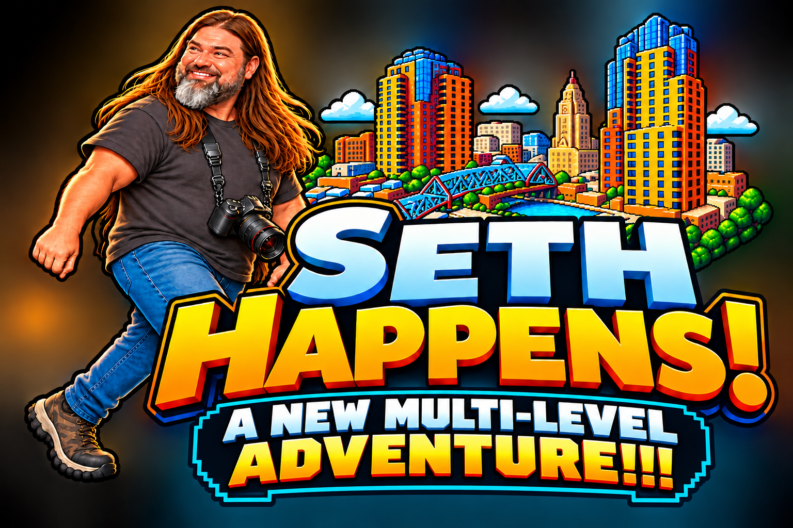

TWELVE ADVENTURES + ENCORE • EARLY ALPHA

A New Adventure
Level 1 · Rooftop Beer Run
Full screen mode highly recommended
Select Start Game to begin the intro.
Keyboard · pair a controller, then press a button
Controller controls (optional)
Left stick / D-pad: move · A / Cross: jump (double-press for Mega Jump) · RT / R2: sprint · X / Square: photo, finish, elevator · B / Circle: missed photo · Menu / Options: pause. Keyboard stays active. Use keyboard/mouse for menus, restart and name entry.
SETH FM1 track · 0 off · [ previous · ] next
1 · Arcade StaircaseHigh-energy arcade electronicaStarts after intro
Rotate to landscape for the best view
v0.13.0 · Early alpha · A fictional comedy adventure. No official team, band or venue affiliation.